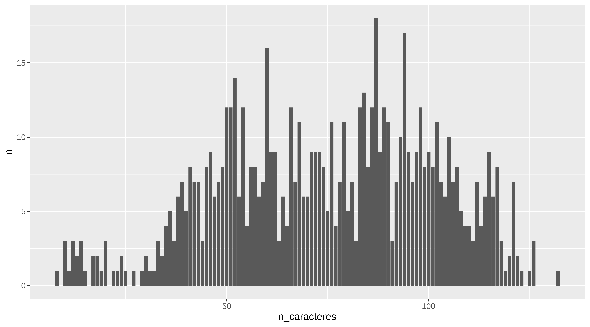
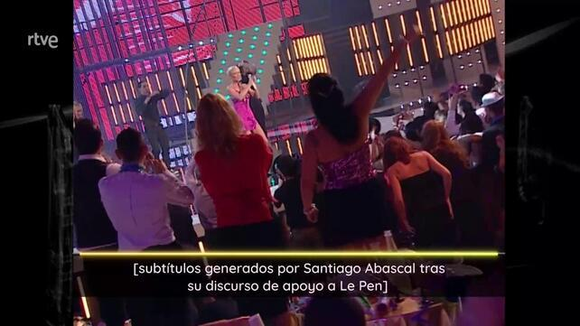
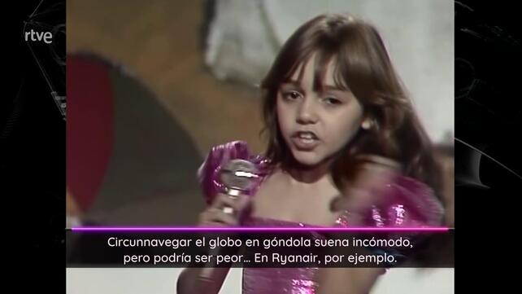
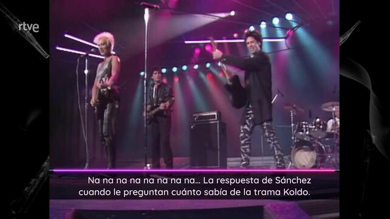

library(tidyverse)
root_directory = "~/proyecto_cachitos/"
anno <- "2025"
nombre_ficheros <- list.files(path = str_glue("{root_directory}{anno}_txt/")) %>%
enframe() %>%
rename(n_fichero = value)
nombre_ficheros
#> # A tibble: 717 × 2
#> name n_fichero
#> <int> <chr>
#> 1 1 00000014.jpg.subtitulo.tif.txt
#> 2 2 00000015.jpg.subtitulo.tif.txt
#> 3 3 00000016.jpg.subtitulo.tif.txt
#> 4 4 00000019.jpg.subtitulo.tif.txt
#> 5 5 00000020.jpg.subtitulo.tif.txt
#> 6 6 00000021.jpg.subtitulo.tif.txt
#> 7 7 00000022.jpg.subtitulo.tif.txt
#> 8 8 00000023.jpg.subtitulo.tif.txt
#> 9 9 00000025.jpg.subtitulo.tif.txt
#> 10 10 00000026.jpg.subtitulo.tif.txt
#> # ℹ 707 more rowsCachitos 2025. Segunda parte
estadística
polémica
2026
textmining
ocr
linux
cachitos
Una vez que ya hemos visto en la entrada anterior como extraer los rótulos, vamos a juntarlos todos en un sólo csv y hacer algo de limpieza.
Dejo el enlace a los ficheros de texto construidos por tesseract enlace directorio
Lectura rótulos
Ahora los podemos leer en orden
subtitulos <- list.files(path = str_glue("{root_directory}{anno}_txt/"),
pattern = "*.txt", full.names = TRUE) %>%
map(~read_file(.)) %>%
enframe() %>%
left_join(nombre_ficheros)
glimpse(subtitulos)
#> Rows: 717
#> Columns: 3
#> $ name <int> 1, 2, 3, 4, 5, 6, 7, 8, 9, 10, 11, 12, 13, 14, 15, 16, 17, 1…
#> $ value <list> "ESKORBUTO - Cuidado\n(Café Panamá, 1986)\n", "Aviso para o…
#> $ n_fichero <chr> "00000014.jpg.subtitulo.tif.txt", "00000015.jpg.subtitulo.ti…
subtitulos
#> # A tibble: 717 × 3
#> name value n_fichero
#> <int> <list> <chr>
#> 1 1 <chr [1]> 00000014.jpg.subtitulo.tif.txt
#> 2 2 <chr [1]> 00000015.jpg.subtitulo.tif.txt
#> 3 3 <chr [1]> 00000016.jpg.subtitulo.tif.txt
#> 4 4 <chr [1]> 00000019.jpg.subtitulo.tif.txt
#> 5 5 <chr [1]> 00000020.jpg.subtitulo.tif.txt
#> 6 6 <chr [1]> 00000021.jpg.subtitulo.tif.txt
#> 7 7 <chr [1]> 00000022.jpg.subtitulo.tif.txt
#> 8 8 <chr [1]> 00000023.jpg.subtitulo.tif.txt
#> 9 9 <chr [1]> 00000025.jpg.subtitulo.tif.txt
#> 10 10 <chr [1]> 00000026.jpg.subtitulo.tif.txt
#> # ℹ 707 more rowsTenemos 717 rótulos de los cuales la mayoría estarán vacíos
Contando letras
En n_fichero tenemos el nombre y en value el texto. Si vemos alguno de los subtítulos.
Contemos letras.
subtitulos <- subtitulos %>%
mutate(n_caracteres = nchar(value))
subtitulos %>%
group_by(n_caracteres) %>%
count()
#> # A tibble: 114 × 2
#> # Groups: n_caracteres [114]
#> n_caracteres n
#> <int> <int>
#> 1 8 1
#> 2 10 3
#> 3 11 1
#> 4 12 3
#> 5 13 2
#> 6 14 3
#> 7 15 1
#> 8 17 2
#> 9 18 2
#> 10 19 1
#> # ℹ 104 more rows
subtitulos %>%
group_by(n_caracteres) %>%
count() %>%
ggplot(aes(x = n_caracteres, y = n)) +
geom_col()
Y viendo el conteo podríamos ver cómo son los rótulos con menos de 23 caracteres. Y suele ser por haber pillado el nombre de la canción en vez del rótulo
subtitulos %>%
filter(n_caracteres <= 23, n_caracteres > 0 ) %>%
arrange(desc(n_caracteres)) %>%
head(40) %>%
pull(value)
#> [[1]]
#> [1] "Carbonell virgen extra\n"
#>
#> [[2]]
#> [1] "¡Antonio Lobatooooo!!\n"
#>
#> [[3]]
#> [1] "Buayas, buayacadash\n"
#>
#> [[4]]
#> [1] "Yes, We Can..arias!\n"
#>
#> [[5]]
#> [1] "“Operación Salido”.\n"
#>
#> [[6]]
#> [1] "(0ouay> :uoanjos)\n\n"
#>
#> [[7]]
#> [1] "SPOILER: sale mal\n"
#>
#> [[8]]
#> [1] "“GTA: San Isidro”\n"
#>
#> [[9]]
#> [1] "— —-—=—Lde q - E\n"
#>
#> [[10]]
#> [1] "Rock pata negra.\n"
#>
#> [[11]]
#> [1] "Sola y Selena.\n"
#>
#> [[12]]
#> [1] "- u : VA A .A\n"
#>
#> [[13]]
#> [1] "( TECHNO sKA\n\n"
#>
#> [[14]]
#> [1] "¡Bi-bi-Bizet!\n"
#>
#> [[15]]
#> [1] "Turra Mítica\n"
#>
#> [[16]]
#> [1] "$iñ'r (“'\n\n.\n"
#>
#> [[17]]
#> [1] "Buayaaaaash\n"
#>
#> [[18]]
#> [1] "Buayaaagash\n"
#>
#> [[19]]
#> [1] "E\n\n7\n\nra\n\nA\n"
#>
#> [[20]]
#> [1] "+ EE — E E\n"
#>
#> [[21]]
#> [1] "E\n.\n\"»\n\n=\n"
#>
#> [[22]]
#> [1] "—\nT — AEE\n"
#>
#> [[23]]
#> [1] "\" áenmnnX\n"
#>
#> [[24]]
#> [1] "p\n\n—7 |\n"subtitulos %>%
filter(n_caracteres >= 30) %>%
arrange(n_caracteres)
#> # A tibble: 688 × 4
#> name value n_fichero n_caracteres
#> <int> <list> <chr> <int>
#> 1 62 <chr [1]> 00000119.jpg.subtitulo.tif.txt 30
#> 2 675 <chr [1]> 00001261.jpg.subtitulo.tif.txt 30
#> 3 390 <chr [1]> 00000708.jpg.subtitulo.tif.txt 31
#> 4 413 <chr [1]> 00000746.jpg.subtitulo.tif.txt 32
#> 5 103 <chr [1]> 00000197.jpg.subtitulo.tif.txt 33
#> 6 104 <chr [1]> 00000198.jpg.subtitulo.tif.txt 33
#> 7 493 <chr [1]> 00000886.jpg.subtitulo.tif.txt 33
#> 8 176 <chr [1]> 00000337.jpg.subtitulo.tif.txt 34
#> 9 714 <chr [1]> 00001346.jpg.subtitulo.tif.txt 34
#> 10 265 <chr [1]> 00000489.jpg.subtitulo.tif.txt 35
#> # ℹ 678 more rowsUsando la librería magick en R que permite usar imagemagick en R, ver post de Raúl Vaquerizo y su homenaje a Sean Connery, podemos ver el fotograma correspondiente
library(magick)
(directorio_imagenes <- str_glue("{root_directory}video/{anno}_jpg/"))
#> ~/proyecto_cachitos/video/2025_jpg/
image_read(str_glue("{directorio_imagenes}00000225.jpg"))
image_read(str_glue("{directorio_imagenes}00000311.jpg"))
Así que nos quedamos con los rótulos con más de 30 caracteres
Detección duplicados
Mini limpieza de caracteres extraños y puntuación
string_mini_clean <- function(string){
string <- gsub("?\n|\n", " ", string)
string <- gsub("\r|?\f|=", " ", string)
string <- gsub('“|”|—|>'," ", string)
string <- gsub("[[:punct:][:blank:]]+", " ", string)
string <- tolower(string)
string <- gsub(" ", " ", string)
return(string)
}
# Haciendo uso de programación funciona con purrr es muy fácil pasar esta función a cada elemento. y decirle que
# el resultado es string con map_chr
subtitulos_proces <- subtitulos %>%
mutate(texto = map_chr(value, string_mini_clean)) %>%
select(-value)
subtitulos_proces %>%
select(texto)
#> # A tibble: 686 × 1
#> texto
#> <chr>
#> 1 "eskorbuto cuidado café panamá 1986 "
#> 2 "aviso para ofendiditos llevamos más de una década haciendo esto y seguimos …
#> 3 "si quieres prevenir el eskorbuto déjate de pepino y de chuminadas y ponle l…
#> 4 "los toreros muertos los toreros muertos tocata 1987 "
#> 5 "estos son los únicos toreros sobre los que existe cierto consenso están fat…
#> 6 "estos son los únicos toreros sobre los que existe cierto consenso están fat…
#> 7 "casi cuarenta años esquivando las cornadas de la corrección política "
#> 8 "seguridad social acción plastic 1990 "
#> 9 "ahora en varias comunidades autónomas se les conoce como seguro privado "
#> 10 "seis chavales compartiendo un garaje plastic se adelantó varios años a la c…
#> # ℹ 676 more rowsDistancia de texto entre rótulos consecutivos. Usamos método lcs “longest common substring distance”.
Si tienen distancia 0 es que son el mismo subtítulo
subtitulos_proces <- subtitulos_proces %>%
mutate(texto_anterior = lag(texto)) %>%
mutate(distancia = stringdist::stringdist(texto, texto_anterior, method = "lcs"))
subtitulos_proces %>%
filter(!is.na(distancia)) %>%
select(name,texto,distancia, texto_anterior, everything()) %>%
arrange(distancia) %>%
DT::datatable(options = list(scrollX=TRUE))Decidimos eliminar texto cuya distancia sea menor de 30
No nos hemos quitado todos los duplicados pero sí algunos de ellos.
dim(subtitulos_proces)
#> [1] 630 5Y ya solo tenemos 630 rótulos
Guardamos el fichero unido
Y en el DT ya podéis buscar rótulos dedicados a Pedro Sánches por ejemplo.
rot_sanchez <- subtitulos_proces |>
filter(texto |> tolower() |> stringr::str_detect("sánchez"))
rot_sanchez
#> # A tibble: 6 × 5
#> name n_fichero n_caracteres texto distancia
#> <int> <chr> <int> <chr> <dbl>
#> 1 44 00000090.jpg.subtitulo.tif.txt 102 "leticia sabater … 94
#> 2 45 00000091.jpg.subtitulo.tif.txt 62 "marta sánchez qu… 86
#> 3 190 00000359.jpg.subtitulo.tif.txt 87 "el estribillo es… 81
#> 4 276 00000507.jpg.subtitulo.tif.txt 102 "na na na na na n… 99
#> 5 417 00000753.jpg.subtitulo.tif.txt 100 "pedro sánchez es… 108
#> 6 574 00001049.jpg.subtitulo.tif.txt 83 "el viaje en coch… 93
rot_sanchez$texto
#> [1] "leticia sabater marta sánchez si la categoría es rubio de bote ya tarda en salir david broncano "
#> [2] "marta sánchez quizás quizás quizás tariro tariro 1988 "
#> [3] "el estribillo es una versión desechada de la primera carta a la ciudadanía de sánchez "
#> [4] "na na na na na na na na la respuesta de sánchez cuando le preguntan cuánto sabía de la trama koldo "
#> [5] "pedro sánchez está pillando tips de maquillaje para cuando se filtre el próximo informe de la uco "
#> [6] "el viaje en coche más arriesgado desde el del peugeot de las primarias de sánchez "Ahora nos quesmoa con el nombre del fichero para poder identificar rápidamente el fotograma y el subtítulo
# identificamos nombre del archivo jpg con los rótulos polémicos
sanchez_fotogramas_fn <- unique(substr(rot_sanchez$n_fichero, 1,9))
head(sanchez_fotogramas_fn)
#> [1] "00000090." "00000091." "00000359." "00000507." "00000753." "00001049."
# creamos la ruta completa donde están
sanchez_fotogramas_fn_full <- paste0(str_glue("{root_directory}video/{anno}_jpg/"), sanchez_fotogramas_fn, "jpg")
# añadimos sufijo subtitulo.tif para tenr localizado la imagen que tiene solo los rótulos
sanchez_subtitulos_full <- paste0(sanchez_fotogramas_fn_full,".subtitulo.tif")Ahora leemos las imágenes y las guardamos en una lista
sanchez_fotogramas_img[[4]]
sanchez_subtitulos_img[[4]]set.seed(50)
# escogemos 4 al azar
indices <- sort(sample(1:length(sanchez_fotogramas_img), 4))
lista_fotogram_polemicos <- lapply(sanchez_fotogramas_img[indices], grid::rasterGrob)
gridExtra::grid.arrange(grobs=lista_fotogram_polemicos )
Podéis hacer el ejercicio buscando a Errejón o a Feijóo o al juez Peinado y ya que cada cual saque sus conclusiones
Con Feijóo
rot_feijoo <- subtitulos_proces |>
filter(texto |> tolower() |> stringr::str_detect("\\bfeijóo\\b|\\bfeijoo\\b"))
rot_feijoo$texto
#> [1] "feijóo demostró con esta canción que su gusto musical es como algunas de sus ideas en blanco y negro "
#> [2] "si la canción anterior ha levantado a feijóo de su asiento esta en gallego ha hecho que ayuso abandone la habitación "Con Robe
rot_robe <- subtitulos_proces |>
filter(texto |> tolower() |> stringr::str_detect("\\brobe\\b|\\bextremoduro\\b"))
rot_robe$texto
#> [1] "extremoduro extrema y dura plastic 1989 "
#> [2] "en las próximas elecciones extremeñas y en todas nuestro voto es para robe "Pues con esto ya tenéis para jugar un rato.